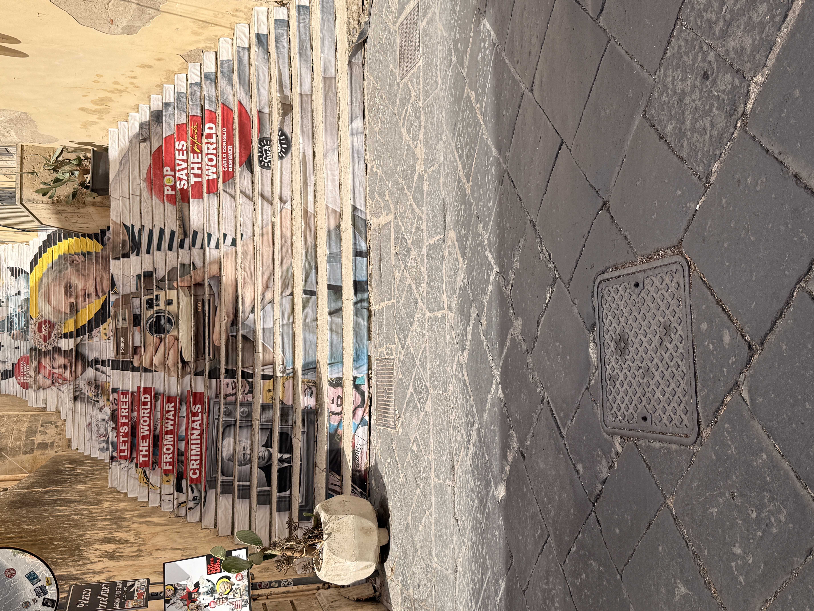

This summer I went to Sicily, for a spiritual retreat, at the base of Mt. Etna. The retreat was held at Ater Tumti, a holistic and spiritual retreat, that centers on deep nature immersion, wellness, and personal transformation. Ater Tumti, translates from ancient Atlantian times to mean, "Heaven on Earth," and it literally was. I spent 5 days there and the experience has changed my life for the better. I'm living life intentionally and not playing small. I've let go of my limiting beliefs and have become a new version of myself...the version that I was always afraid to show. Now, I've let go of the guilt and shame, and I'm authentically being me...unapologetically.
After the retreat, I visitied a few other cities in Sicily. I went to Catania and Noto. Both cities were beautiful, but my favorite city was Noto. Noto is famous for its baroque arcitecture, world-class granita, and it's a great location for film and tv...such as the movie Malena, and the television show, White Lotus.
